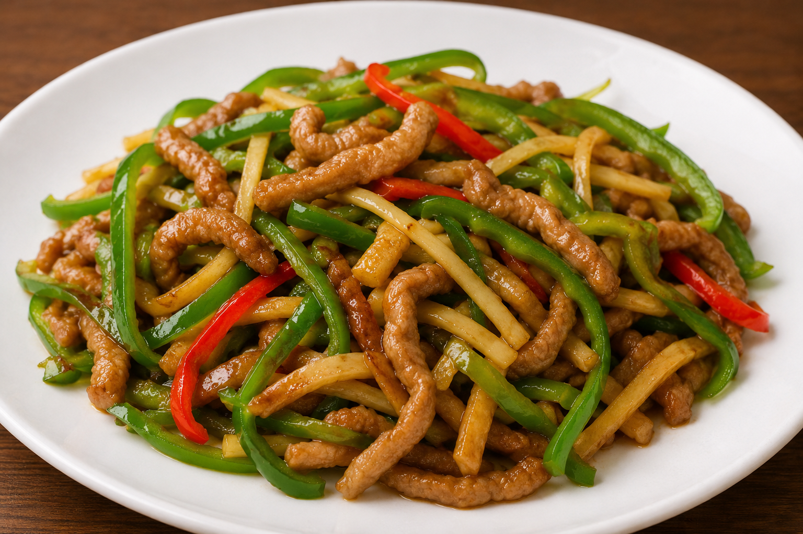
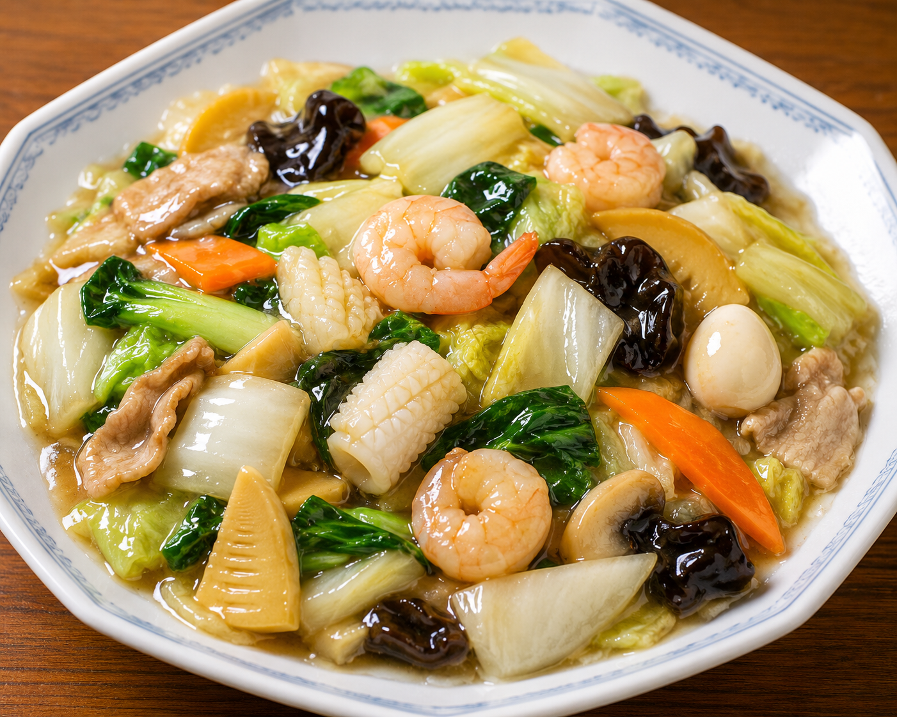
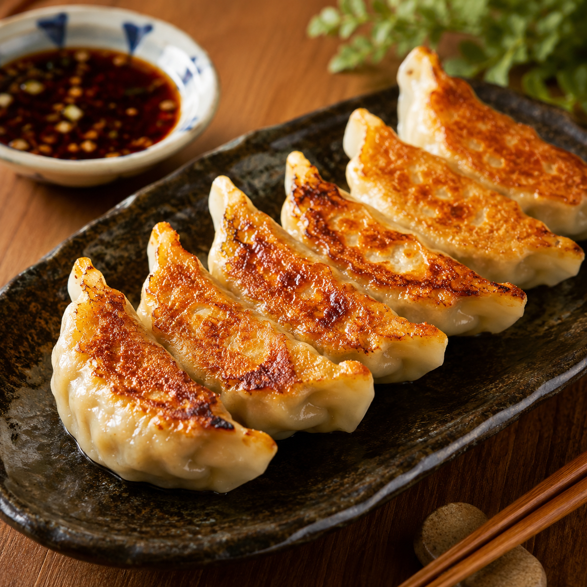

中華料理について
中華料理は、中国で発展した料理で、炒める・蒸す・煮る・揚げるなど、 さまざまな調理法が使われています。味付けや食材の種類が豊富で、 日本でも家庭料理や外食として広く親しまれています。 その中から3つの中華料理を紹介します。
青椒肉絲

青椒肉絲は、細切りにした肉とピーマンを炒めた中華料理です。 「青椒」はピーマン、「肉絲」は細切りの肉という意味があります。 シャキシャキとしたピーマンの食感と、肉のうま味が特徴で、 ご飯によく合う料理として人気があります。
中国の炒め物料理の一つとして発展し、日本でも家庭料理や中華料理店の 定番メニューとして広まりました。短時間で強火調理することで、 食材の色や食感を生かしている点も魅力です。
八宝菜

八宝菜は、白菜・にんじん・たけのこ・きくらげ・豚肉・えび・いかなど、 多くの具材を使ったあんかけ料理です。「八宝菜」の「八」は、 必ず八種類という意味ではなく、「多くの」という意味もあります。
肉・魚介・野菜を一度に味わえるため、栄養バランスがよい料理です。 具材の彩りが豊かで、とろみのあるあんが全体をまとめているのが特徴です。 中国料理の炒め煮料理をもとに、日本でも親しまれるようになりました。
餃子

餃子は、小麦粉で作った皮に、ひき肉や野菜を包んで調理する料理です。 日本では焼き餃子が特に人気で、外はカリッと、中はジューシーな食感が 楽しめます。しょうゆ・酢・ラー油などをつけて食べることが多いです。
餃子のルーツは中国にあり、中国では水餃子や蒸し餃子として食べられることも 多いです。日本では戦後に広まり、現在では家庭料理やラーメン店の 定番メニューとして親しまれています。
まとめ
青椒肉絲、八宝菜、餃子は、それぞれ異なる特徴を持つ中華料理です。 青椒肉絲は炒め物、八宝菜はあんかけ料理、餃子は具材を皮で包む点心料理です。 この三つを紹介することで、中華料理の幅広い魅力を伝えることができます。